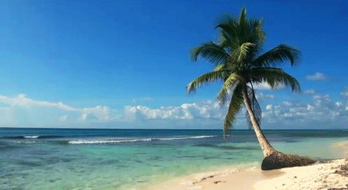

Playas
Definición

Es la orilla de un cuerpo de agua que puede contener arena, piedras o rocas. El concepto playa proviene del latín tardío plagia, y hace referencia a la ribera del mar o cualquier curso de agua de importantes dimensiones. El mar es un atractivo para varios turista.
Se forman por el depósito de las arenas provedentes de ríos, barrancos, restos de acantilados, conchas y corales por la erosión del arrastre del agua.
Tienen varias funciones: no solo son un lugar de recreación, sino que también es el hábitat natural de varios animales y plantas, además de defender a la costa del oleaje.
Algo bello que muchos disfrutan de la playa es la arena, este es el resultado de la erosión de las rocas y el arrecife coralino. El viento, agua de los ríos, todo afecta y se transforman en granos finos de color claro, dependiendo del lugar.
Características
- Son un accidente dinámico y en constante evolución (debido a que siempre están sujetas al oleaje, fenómenos climáticos y actividad humana).
- Es un lugar muy frecuentado por varios seres vivos: entre ellos el hombre, ya que en ella puede hacer múltiples actividades de recreación (nadar, practicar surf, caminar, etc.).
- Están formadas por la acumulación de sedimentos, los cuales pueden ser terrígenos (corteza terrestre), biogénicos (animales marinos) o mixtos (mezcla de ambos).
- Surgen de la erosión de rocas o arrecifes de coral cerca del océano.
- En la playa, los veranos son largos, calurosos y mayormente nublados; y los inviernos son cómodos, secos y parcialmente nublados. La temperatura puede varias de 16°C a 34°C.
- Existen varios tipos de arena que son deeterminantes: los granos finos retendrán más agua, causando mayores cantidades de cohesión, gracias a este tipo de arena podemos crear castillos de arenaS; los granos redondos brindan una mayor adhesión y no retendrá mucha humedad, lo que las hace móviles, logrando que viajen de una manera fácil
Importancia
Su importancia radica en que son las protectoraas de los residentes del océano; además, nos defienden de los fuertes vientos, olas y tormentas.Económicamente son muy importantes en las ciudades que viven del turismo, ya que la playa genera ganancias económicas que benefician a miles de familias, un ejemplo de estas ciudades es Cancún, Q.Roo.
Así como resaltamos el papel importante de las playas, no hay que olvidar destacar el por qué hay que cuidarlas y mantenerlas limpias: